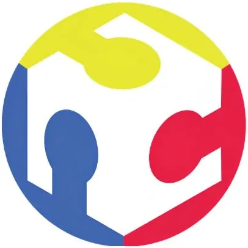

FabLab Negros — NORSU
Negros Oriental State University · Region XVIII: NIR
FabLab Negros is the digital fabrication laboratory of Negros Oriental State University (NORSU), located in Dumaguete City — the "City of Gentle People" and one of the Philippines' most vibrant university cities in Negros Oriental. Registered on the global fablabs.io directory, FabLab Negros represents NORSU's commitment to maker education, innovation, and technology access for students and MSMEs across the Negros Island Region.
- Category
- Fabrication Laboratory (FabLab)
- Host institution
- Negros Oriental State University
- City
- Dumaguete City, Negros Oriental
- Region
- Region XVIII: NIR
- Operating status
- Operating
About the Center
Dumaguete's dense concentration of higher education institutions makes FabLab Negros a regional resource for engineering, design, and entrepreneurship students beyond NORSU's own campus, as well as local enterprises looking to prototype and innovate in the NIR's growing creative and manufacturing sectors.
Programs & Services
- 3D printing for product prototyping and model fabrication
- Laser cutting and engraving for precision material processing
- CNC milling/routing for component and part fabrication
- Vinyl cutting for graphic and signage applications
- CAD workstations for digital design and engineering
- Open fabrication access for NORSU students, faculty researchers, and Dumaguete City MSMEs
- Fabrication support for innovators and entrepreneurs across the Negros Island Region
Contact
Sources & references
- fablabs.io/labs/fablabnegros
- norsu.edu.ph/38
- dti.gov.ph/negosyo/shared-service-facilities/fabrication-laboratories
Details are drawn from public records and the sources above, July 2026.
Startupreneur Innovation Hub · synced from the Notion catalog (July 2026) · status: published.